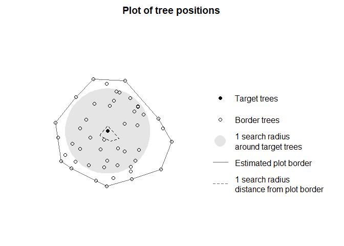

Quantifying competition from inventory data
Source:vignettes/competition-inventory.Rmd
competition-inventory.RmdOverview
Within TreeCompR it is possible to easily derive
size-distance-dependent competition indices based on inventory data.
This data can be collected in the field, or derived or modelled from 3D
point clouds. Depending on the input data, there are some necessary
pre-processing steps. Check out our workflows:
- From airborne laser scanning data to competition indices: vignette(“ALS_inventory”): ALS workflow
- From ground-based laser scanning data (from MLS/TLS) to competition indices: TLS workflow
Analyzing inventory data with TreeCompR
To illustrate how TreeCompR can be included inside a tidy workflow, we will make use of tidyverse function throughout the tutorial:
However, we will explicitly quote the corresponding package for all
functions used in the tutorial in the form of purrr::map()
for all functions besides the magrittr pipe operator
%>%.
Reading in forest inventory data with with
read_inv()
The inventory data must contain x and y coordinates of the individual trees, and to be able to compute competition have to contain at least one more size-related variable (e.g. height or diameter at breast height).
To ensure that the inventory data is assigned correctly, inspect the
data thoroughly. Make sure to specify the units for dbh and height if
they differ from the default, which is cm for dbh and m for height. Tree
coordinates should always be specified in m. You can
either use read_inv() to validate your inventory data and
convert them to an object type used by the TreeCompR
functions, or directly pass data.frames or paths to files to
compete_inv(). The former is especially useful if you have
data with non-standard column names or data structures and want to fully
control how they are parsed.
In a simple case, reading data with read_inv() with
standard settings (except for the metric tree diameters) looks like
this:
inventory1 <- read_inv(
inv_source = "data/inventory1.csv",
dbh_unit = "m",
height_unit = "m")read_inv() does flexibly recognize a large number of
different spellings for the common inventory variables. If provided with
tabular data without explicitly specified variable names, the function
by default takes the columns named “X” and “Y” (or “x” and “y”) to be
the tree coordinates, and looks for columns named “height”, “height_m”
or “h” as well as “dbh”, “diameter”,“diam”, or “d” (in any
capitalization) as size-related variables. The tree ids are taken from
columns named “id”, “tree_id”, “treeID” or “tree.id” (in any
capitalization). All special characters besides “.” and “_” are stripped
from the column names before matching. If verbose = TRUE,
the function will inform you which columns were automatically
identifided to avoid errors.
If you have variable names that cannot be automatically recognized, you can specify them explicitly with the corresponding arguments either as a character string of length 1 with the variable name or by directly specifying the name without quotes. For example, assume you have a data set with (metric) UTM coordinates from a Spanish source, i.e. with “dap_cm” (diámetro en altura de pecho) instead of dbh and “altura” instead of height:
inventory2 <- read_inv(
inv_source = "data/inventory2.csv",
x = utmx,
y = utmy,
dbh = dap_cm,
height = altura,
dbh_unit = "cm",
height_unit = "m")Non-standard field separators etc. can be internally passed on to
data.table::fread() via the ... arguments to
read more exotic formats such as the semicolon-separated “.csv” files
with commas as decimal separators used for example in Germany.
inventory1 <- read_inv(
inv_source = "data/inventory3.csv",
dbh_unit = "m",
height_unit = "m",
dec = ",",
sep = ";")In many cases, pre-processing of the inventories based on other
variables than coordinates and tree size is necessary. For that reason,
it is possible to read in any objects that inherit from class
data.frame (e.g., tibbles, data.tables or actual
data.frames) with read_inv():
# read dataset outside read_inv and filter to the plot in question
dat <- readr::read_csv("data/inventory4.csv") %>%
filter(plot_id == "Plot 1")
# use read_inv to convert to a forest_inv object that works with TreeCompR functions
inventory4 <- read_inv(
inv_source = dat,
dbh = DAP,
dbh_unit = "cm",
height_unit = "m")Designating target trees with define_target()
To select target trees for computing competition indices, you can use
the function define_target().
There are many different ways of specifying target trees that are
described in the documentation of define_target(). Briefly,
you can directly supply tree IDs as a character string, you can define
them based on logical vectors, you can supply another
forest_inv object created with read_tree()
that contains their coordinates, or finally with a character string
specifying a method to define the target trees (“buff_edge”,
“exclude_edge” and “all_trees”).
Defining targets with a vector of tree IDs could look like this, assuming you want to compute competition indices for 3 adjacent Fagus sylvatica trees and this is your naming scheme:
# set target trees based on vector with tree ids
targets1 <- define_target(
inv = inventory1,
target_source = c("FASY-43-27", "FASY-43-28", "FASY-43-29")
)You might also want to define target trees based on a logical criterion, for instance for all trees whose ID contains “FASY”:
# set target trees based on logical vector
targets2 <- define_target(
inv = inventory1,
target_source = grepl("FASY", inventory1$id)
)In many cases you will have target tree coordinates that come from a different data source and have a different accuracy than the inventory data, for instance when you perform a ground-based study focusing on single trees and wish to derive tree competition from ALS sources based on the GPS coordinates from your trees. In these cases, you will have to match the GPS coordinates against the tree coordinates derived from the ALS source (see ALS workflow for details on how to derive inventory data from ALS sources).
In these cases, it is possible to supply an inventory based on a
second set of coordinates as a target_source which is then
matched against the inventory data. IDs are then ignored (as they are
likely automatically generated anyway) and matching is based only on the
closest trees with in a buffer of tol m (the default is
tol = 1: matching within 1 m). All further size-related
variables in the second set of coordinates are ignored as well to ensure
the competition indices are based on the same data source:
# read target tree positions
target_pos <- read_inv("data/target_tree_gps.csv", x = gps_x, y = gps_y)
# define target trees
targets3 <- define_target(
inv = inventory1,
target_source = target_pos,
tol = 1 # match within 1 m accuracy
)If no trees in the inventory are in the desired distance of one or more of your target trees, you will receive a warning, while if there is more than one equally good match for a target tree, the function will fail with an error.
In many cases, there will be no list of a priori specified target
trees, and the aim will be to calculate valid competition indices for as
many trees as possible. In these cases, we recommend to use
target_source = "buff_edge". This automatically designates
all trees in the plot that are at least one search radius away from the
plot edge (roughly approximated by a concave hull) to avoid edge
effects. This is specifically important for TLS/MLS data and classical
forest inventories, since in contrast to ALS-derived datasets these data
usually cover relatively small forest plot rather than entire forests.
Setting target_source = "exclude_edge" only removes the
trees on the edge of the plot without checking how close the rest of the
trees is from the edge and is hence less restrictive but more prone to
edge effects than the previous option. If you use these spatially
explicit methods of defining target trees, make sure that your inventory
only contains data from one plot as currently grouping is not possible
in define_target(). If you want to consider doing this for
a larger number of plots, consider e.g. mapping over the plots with
[purrr::map()] to compute the output step by step.
Here is an example of how to identify all potential target trees that run in no risk of excluding potential edge trees when computing competition indices with a search radius of 10 m:
targets4 <- define_target(
inv = inventory1,
target_source = "buff_edge",
radius = 10)While it is possible to compute competition indices for all trees
(target_source = "all_trees"), this results in a warning
and should only be done if there very good reasons to
assume that the edge trees in the data are actually situated at the
forest edge, as otherwise there will be intense edge effects:
for a tree on a straight plot edge, on average nearly half and for a
tree in an edge position in a rectangular plot 3/4 of the competitors
will be missing in the data!
Inspecting the target selection with plot_target()
To visually inspect the position of the designated target trees
relative to the other trees in the neighbourhood, you can use the
function plot_target(), which automatically displays the
relevant information depending on the target_source setting
for both target_inv datasets and the output of
compete_inv() itself:
plot_target(targets4)
The purpose of this function is to provide a fast tool for visual
inspection rather than to create beautiful visual output. As all the
data for the plot are contained in the target_inv object,
more appealing (e.g., ggplot2-based) visualizations
are left as an exercise to the user.
Computing competition indices with compete_inv()
compete_inv() is very flexible with its input, in
essence directly accepting everything that can also be loaded with
read_inv() and also passing additional settings for column
specifications etc. on to this function, which is used to load the data
internally. Also all options for target_source that can be
set in define_target() can be directly specified in
compete_inv(), and in most cases this function will likely
be called directly unless there are reasons to perform the other steps
explicitly, for instance, because the data structure and formatting
differ between the inventory and target files or because an inspection
of the target settings is desired before computing the
results.
If target trees have already been specified with
target_inv(), the outcome can directly be passed to
compete_inv(), which then ignores the target_source
argument and all further arguments that are passed on to
read_inv() and define_target().
compete_inv(inv_source = targets4, radius = 10, method = "CI_Hegyi")Otherwise, it is for example possible to calculate the Hegyi
competition index from a data from a .csv source with non-standard
column names and decimal and field separators (in this example, from a
German file source) and then get reasonable target trees via
target_source = "buff_edge":
CI1 <- compete_inv(
inv_source = "data/inventory5.csv",
target_source = "buff_edge",
radius = 10,
method = "CI_Hegyi",
x = Koord_x,
y = Koord_y,
id = Baumname,
dbh = Durchmesser,
sep = ";",
dec = ","
)The output of this function can then again be inspected with
plot_target() to make sure the selection of target trees
make sense.
The function computes a series of inventory-based competition indices
commonly used in the literature that can be specified via the
method argument (Hegyi
1974; Braathe, 1980; Rouvinen & Kuuluvainen,
1997; see also Contreras et al.,
2011). These are either based on tree diameter at breast height
(“CI_Hegyi”, “CI_RK1”, “CI_RK2”) or on tree height (“CI_Braathe”,
“CI_RK3”, “CI_RK4”). The mathematical definition of these indices is
provided in the documentation of compete_inv().
Note that all these indices are based on a distance-weighted sum of the relative size of all neighbor trees compared to the central tree or a transformation thereof. For that reason, all competition indices are extremely sensitive to the
If method = "all_methods" (the standard setting),
compete_inv() computes all indices that can be computed
with the data available in the inventory.